先有原則，再談繩結；
夾角和腿長，決定每一個點承受多少力。
掃描加入互動
文字雲・投票・匿名提問
用手機輸入一個關鍵詞，可以送出多次
人、繩、器材再好，系統也只和最弱的一環一樣強
資料：臺東縣消防局新聞稿、同行隊友 Madie 事故紀錄（2025-05）
先想一想：這組固定點哪裡出了問題？（點卡片看分析）
岩質和螺栓，夠「強」嗎？
舊的探勘螺栓＋岩質不佳。第一個人用體重測過，不代表它在每個方向都夠強。
如果這個點失效，還有誰撐住？
只靠單一螺栓，沒有第二個獨立固定點，一失效就是墜落。
受力方向有沒有改變？
第一人沿正確方向受力；第二人改成往外拉，同一個點換個方向就失效。
點卡片看每個字母的檢查重點
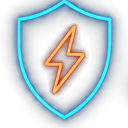
每個點都能承受最大預期負荷
樹要健康、岩要完整、螺栓要可信；連弱方向一起評估。
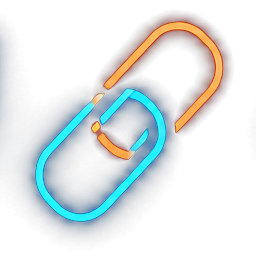
任一元件失效，系統仍成立
至少兩個獨立固定點，避免單點失效。
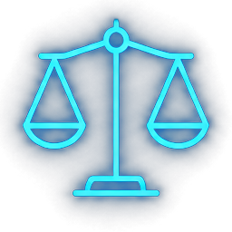
把負荷分配到各固定點
兩種做法：分力（預先分配）與均力（自動調整）。
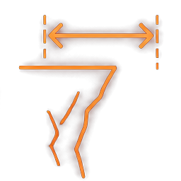
主力點位置與延展距離
一點失效時，掉落距離越短越好。
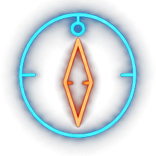
對準預期的受力方向
方向一變就要重新評估，預計受力方向跟未來受力方向都要同時兼顧。
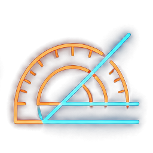
兩腳夾角決定每點受力
分力夾角 45°～60° 最理想，下限 30°、上限 75°。
資料：小B《登山筆記 #32 繩結》、2024 高階溪降與傳攀課程筆記
不讓單一點獨自扛下全部，但「分攤」不等於「一定各 50%」
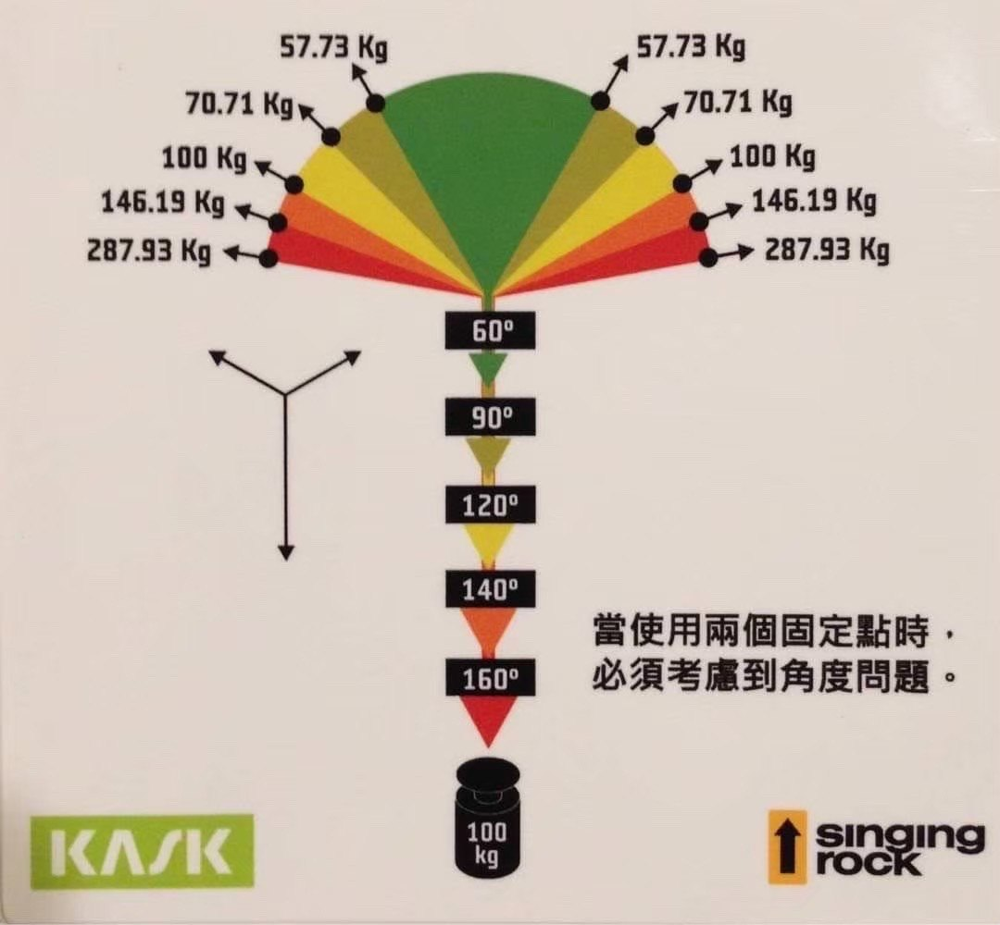
⚠ 夾角與受力偏離，都會讓分配失衡，這是第三單元的重點。
圖：KASK／Singing Rock 夾角受力卡（數值＝100 ÷（2 × cos（夾角÷2）））
Distance／Direction 定義參考 A.D.D.R.E.S.S 原則（ZA Adventure，改編自 Bisson & Barrington）
架設前先想：使用過程中，這組固定點會被往哪些方向拉？
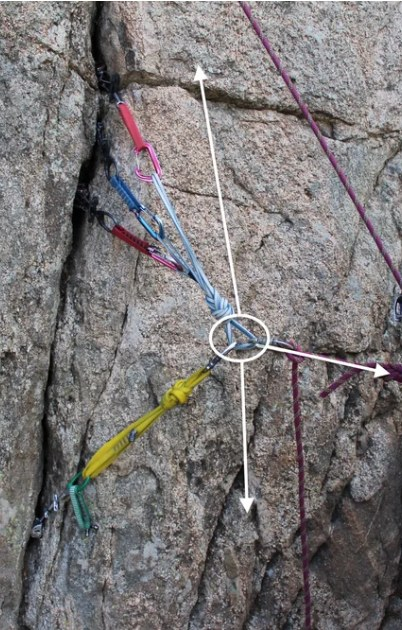
垂降、下放、確保跟攀者。主力點先對準這個方向
例如先鋒墜落時確保者被往上拉。只朝下設計的點可能被拔起，要加反向固定點（圖中黃色扁帶）
橫移、擺盪、路線轉向。主力點和每個點都要承受得了側拉
每多一個可能方向，就逐點再問一次：它在這個方向夠不夠強？
夾角 120° 時，每個點都承受 100% 的負荷，等於沒有分攤
點選列可以標示對照
| 核心概念 | SREDDA本課 | SRENE(A)攀登常用 | ERNEST繩索救援 | A.D.D.R.E.S.SZA Adventure |
|---|---|---|---|---|
| 夠強固 | Strong | Solid | Solid／Strong | 以 Score 評分 |
| 有備援 | Redundant | Redundant | Redundant | Redundancy |
| 負荷分攤 | Equalized | Equalized | Equalized | Equalized |
| 不延展／防衝擊 | Distance | No Extension | Non-Extending | Shock load |
| 主力點位置與方向 | Distance、Direction | — | — | Distance、Direction |
| 夾角 | Angle | Angle（SRENEA） | — | Angle |
| 效率 | — | — | Timely | — |
SRENEA 見 2024 中華山岳傳攀課程表；ERNEST 見 Rigging Lab Academy；A.D.D.R.E.S.S 見 ZA Adventure（2013）
大樹夠粗夠健康、巨岩夠穩，可以只用一個點；備援改由雙股繩圈、雙繩與自我確保提供。點卡片看要點
繩圈繞過樹幹或岩柱，兩端繩耳一起扣進勾環
繩圈在樹幹上自己套住自己，單一繩耳扣勾環
主繩直接繞樹幹基部 3～4 圈，繩尾 8 字圈扣回主繩
繩圈繞過固定點，打 8 字結做出主力點
主繩用雙套結掛在固定點的鎖勾環上
義大利半扣＋騾子結＋單結，鎖住的半扣可以再打開
共同點：先對準受力方向再綁死。點卡片看架設要點
主繩直接連結兩點，形成 Y 字
一個繩結打出兩個繩耳
扁帶套住樹、岩柱或掛片
繩環扣兩～三點，打一個大結做主力點
點卡片看架設要點
繩環扣兩點，一股扭成 X，勾環扣進扭轉處
繩環對折，兩端各打一個單結，中間形成四股
兩個點先串成一組，再和第三點合併，分配就變成 25／25／50
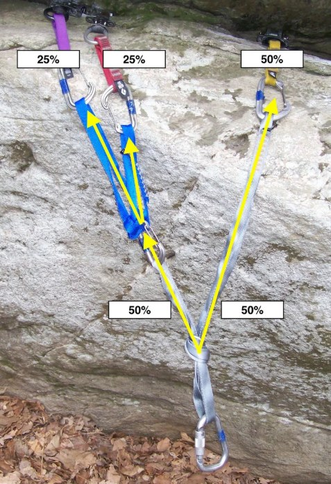
點選列可以標示對照
| 分力Y-hang · 雙耳 8 · Girth · BFK | 均力Sliding X＋Knot · The Quad | |
|---|---|---|
| 主力點 | 固定不動 | 可滑動、自動調整 |
| 受力方向改變 | 負荷集中到一點 | 小範圍內重新分攤 |
| 一點失效時 | 幾乎不延展 | 會延展，要靠限制結控制 |
| 架設重點 | 綁之前先對準受力方向 | X 要扭、限制結不可省 |
| 適合情境 | 受力方向固定：垂降站、溪降、救援主系統 | 受力方向小幅移動：橫移、擺盪、確保站 |
兩種都不是萬靈丹。分力要靠正確的方向和合適的夾角才分得平均，下一單元用數字說明。
用手機畫出繩子和主力點，所有人的筆畫會即時出現
兩點分力架設，
夾角多少最理想？
| 兩腳夾角 θ | 每個固定點受力 | 速記 |
|---|---|---|
| 0°（兩腳平行） | 50% | — |
| 30° | 52% | ≈ 5 成 |
| 60° | 58% | ≈ 6 成 |
| 90° | 71% | ≈ 7 成 |
| 120° | 100% | 10 成 |
| 150° | 193% | 比負荷還大 |
例：負荷 100 kg、夾角 90° → 每點約 71 kg；夾角 120° → 每點 100 kg，等於沒有分攤。
夾角越大，兩腳的水平分力互相拉扯越多，固定點要承受的力也越大。
分力：F₁ = sin(θ/2＋δ) ÷ sin θ。負荷往右偏時，左邊的點受力增加。均力為理想值，未計摩擦。
數據：Grant Prattley〈Two-Point Anchor Angles: The Case for Building in Error〉Over The Edge Rescue（2025）；數值已依 F = sin(θ/2±5°) ÷ sin θ 驗算
偏 5° 時最重的點只到這裡，有容錯空間
完美時看似 50%，偏 5°：15° → 84%、5° → 100%
90° 完美時就 71%，偏 5° 變 77%；120° 達 100～105%
所以一開始就從 45°～60° 開始架：偏 5° 時最重的點只到 65～66%；30° 已經是 68%，夾角再收窄，15° 會衝到 84%，5° 直接 100%。
固定點沿受力方向排成一直線（各腳接近平行），主力點綁死後，各腳被拉長同樣的距離；短腳伸長的比例較大，受力就較多
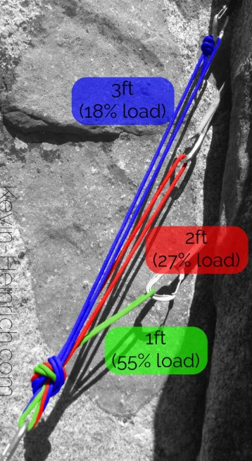
圖：John Long & Bob Gaines《Climbing Anchors》；Kevin Heinrich〈The Best Climbing Anchor: A Look at Anchor Research〉。研究：Chasse（2016）〈Revisiting the Quad〉；Beverly et al.（2005）〈Multi-point Pre-Equalized Anchoring Systems〉
受力 ∝ 1／腳長。選範例或拖拉腳長，看負荷怎麼分
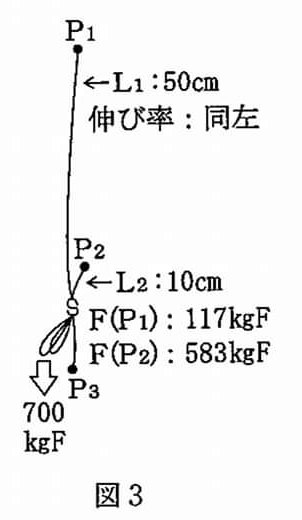
圖 3、圖 4 出自日文教材（伸び率＝伸長率，各腳相同）。計算假設：同材質、各腳接近平行、不計結的鬆弛
COD＝Change of Direction。偏離角＝繩子被改變方向的角度：直線通過 0°、完全折返 180°
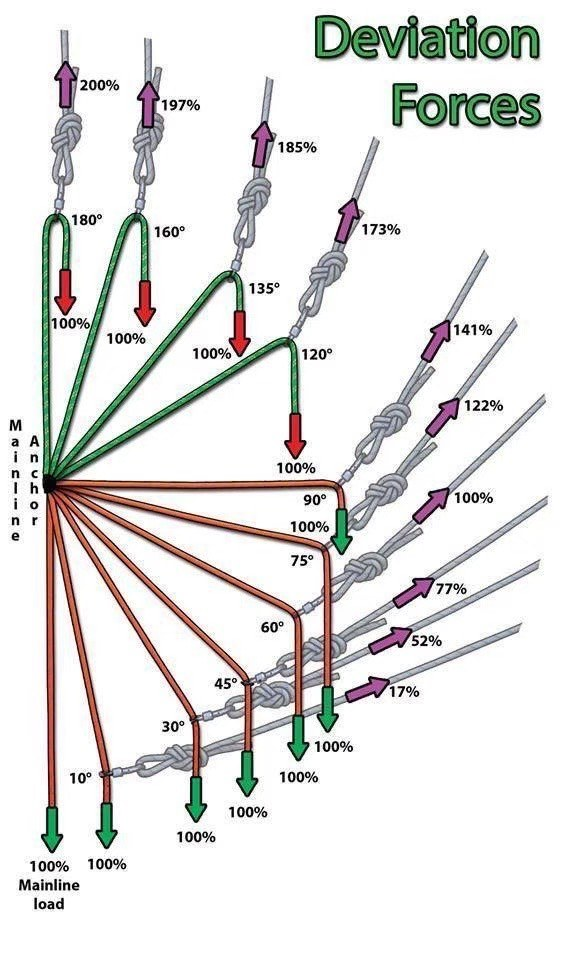
點選任一列，右圖跟著改變偏離角。⚠ 偏離角≠前面的兩腳夾角
偏離角＝180° − 兩側繩夾角。F = 2T·sin(θ/2)，假設兩側繩張力相同、不計滑輪摩擦。圖：Deviation Forces
逐項點選，全部打勾才能受力
弱方向也評估過了
至少兩個獨立固定點
受力方向會不會變
延展距離越短越好
垂降、拖拉、下放的出繩方向
不低於 30°、不超過 75°